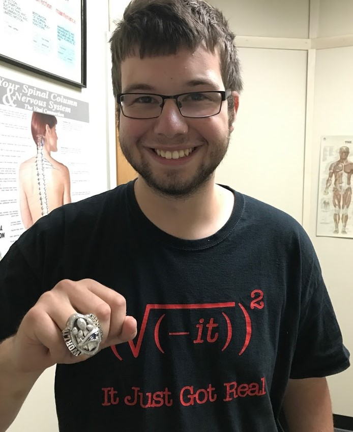
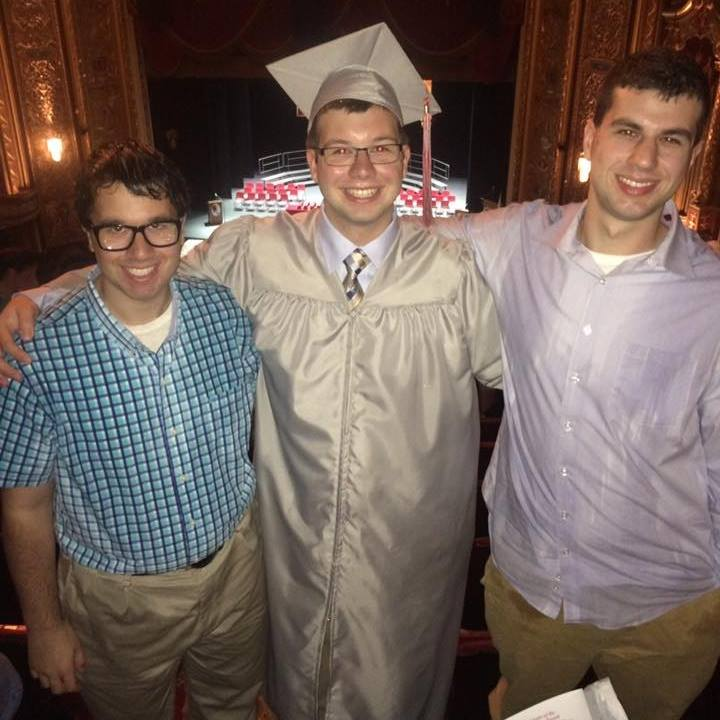
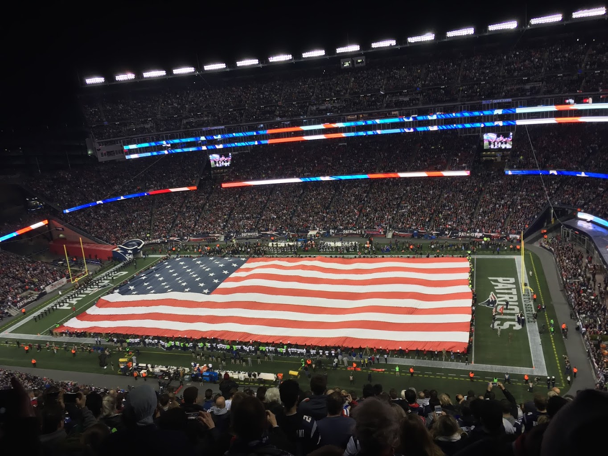
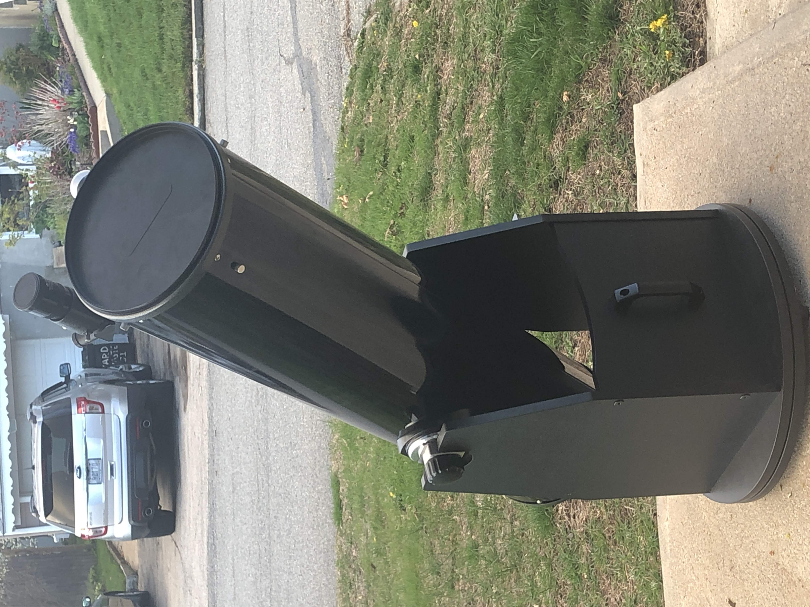

| |
|
|
|---|
|  |  |
|---|
My name is Dan Rainone and I am a physics major at the University of Rhode Island. Growing up in Cranston, RI, I graduated from
Cranston High School West in 2016. I have also attended the Community College of Rhode Island before transferring to URI.
Academically, my interests are surrounded by mathematics and problem solving. Outside of class, I enjoy playing video games,
rooting for the New England Patriots, and frequently partake in amateaur astronomy with my telescope.
|  |  |
|---|